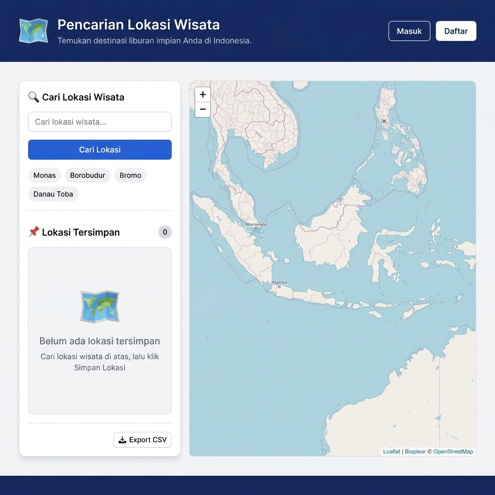
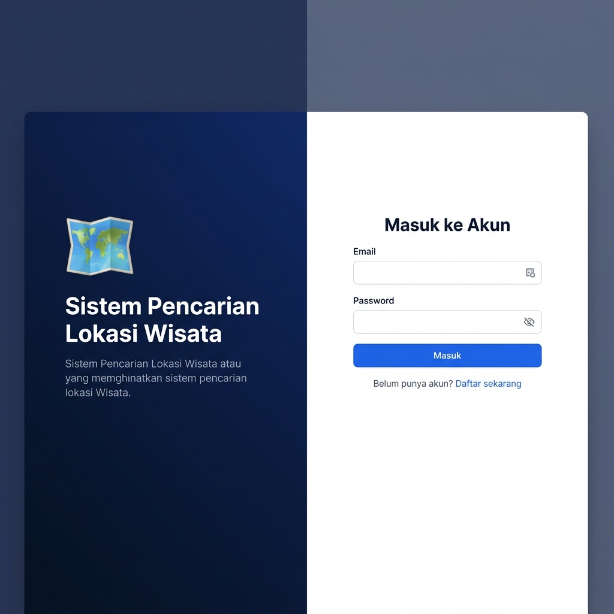
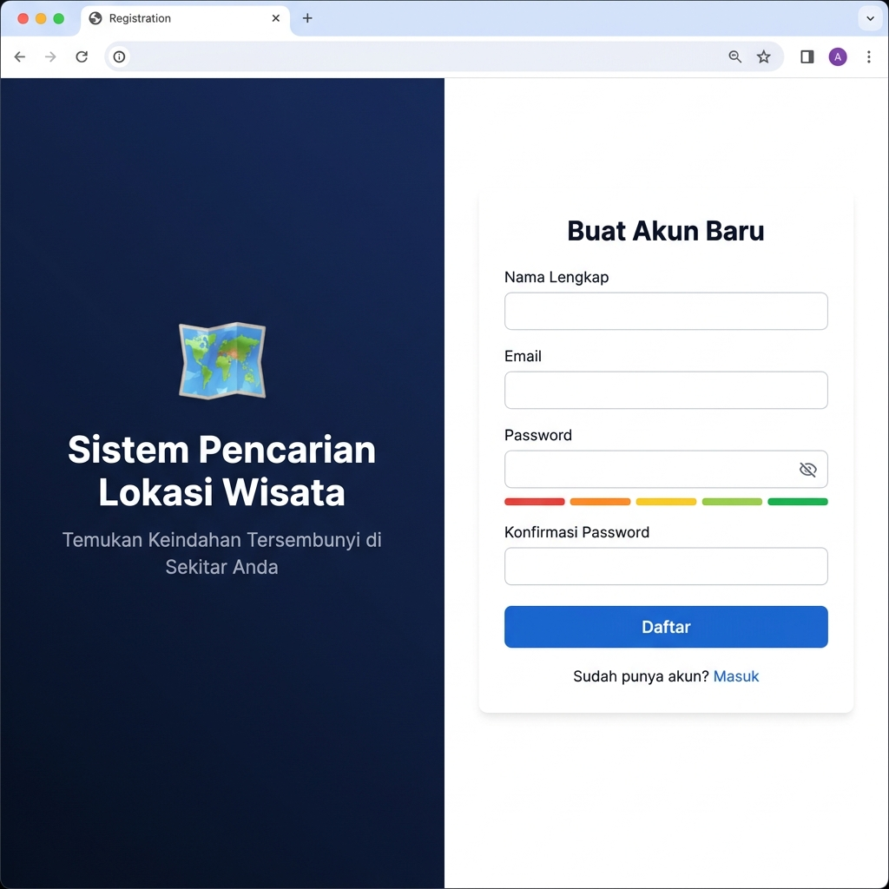

| Nama | : | Zefhana Ananda |
| NIM | : | 20240801047 |
| Program Studi | : | Teknik Informatika |
| Mata Kuliah | : | Pemrograman Web |
Pariwisata merupakan salah satu sektor unggulan perekonomian Indonesia yang terus berkembang pesat. Berdasarkan data Kementerian Pariwisata dan Ekonomi Kreatif, jumlah kunjungan wisatawan domestik terus meningkat dari tahun ke tahun, dengan destinasi wisata yang tersebar di seluruh kepulauan Indonesia. Namun demikian, pengelolaan informasi destinasi wisata secara personal masih menjadi tantangan bagi para wisatawan modern yang aktif menjelajahi berbagai lokasi.
Di era digital saat ini, teknologi informasi berbasis web memiliki peran strategis dalam mendukung aktivitas pariwisata. Aplikasi berbasis web yang dapat diakses dari berbagai perangkat memungkinkan pengguna untuk mencari, menyimpan, dan mengelola informasi lokasi wisata secara fleksibel dan efisien. Dengan memanfaatkan teknologi pemetaan digital seperti OpenStreetMap dan sistem geocoding Nominatim, pengembangan sistem informasi pariwisata berbasis web menjadi semakin memungkinkan dengan biaya yang terjangkau.
Laravel sebagai salah satu framework PHP paling populer menyediakan ekosistem pengembangan yang lengkap, termasuk sistem autentikasi, manajemen database dengan Eloquent ORM, serta keamanan CSRF yang terintegrasi. Kombinasi antara Laravel di sisi backend dan Leaflet.js di sisi frontend memungkinkan pengembangan aplikasi peta interaktif yang responsif dan ramah pengguna.
Berdasarkan permasalahan tersebut, penelitian ini mengembangkan sebuah Sistem Pencarian dan Penyimpanan Lokasi Wisata Berbasis Web yang memungkinkan pengguna untuk mencari lokasi wisata, menyimpannya ke dalam akun pribadi, mengelola daftar lokasi, serta mengekspor data ke format CSV untuk keperluan dokumentasi.
Manfaat Praktis:
Manfaat Akademis:
Kerangka berpikir penelitian ini didasarkan pada tiga pilar utama: (1) kebutuhan pengguna akan sistem manajemen lokasi wisata yang mudah digunakan, (2) ketersediaan teknologi open-source berkualitas tinggi (Laravel, OpenStreetMap, Nominatim), dan (3) prinsip keamanan data pengguna. Ketiga pilar ini membentuk arsitektur sistem yang dikembangkan, di mana backend Laravel mengelola autentikasi dan persistensi data, frontend JavaScript menangani interaksi peta real-time, dan API Nominatim menyediakan layanan geocoding.
Penelitian ini menggunakan metode prototyping iteratif dengan tahapan: analisis kebutuhan, perancangan sistem, implementasi, pengujian, dan evaluasi. Pengembangan dilakukan secara agile dengan siklus iterasi pendek untuk memastikan kualitas antarmuka dan fungsionalitas sistem.
BAB IIModel-View-Controller (MVC) adalah pola arsitektur perangkat lunak yang memisahkan aplikasi menjadi tiga komponen utama: Model (logika data), View (tampilan antarmuka), dan Controller (pengatur aliran). Laravel mengimplementasikan MVC secara penuh dengan dukungan Eloquent ORM untuk Model, Blade templating engine untuk View, dan routing system yang ekspresif untuk Controller (Stauffer, 2019).
Laravel adalah framework PHP open-source yang dikembangkan oleh Taylor Otwell sejak 2011. Laravel menyediakan berbagai fitur bawaan seperti Artisan CLI, Eloquent ORM, sistem migrasi database, autentikasi, CSRF protection, dan session management. Versi terbaru Laravel 11 menggunakan arsitektur yang lebih ramping dengan pendekatan "slim application skeleton" yang meningkatkan performa (Laravel Documentation, 2024).
OpenStreetMap (OSM) adalah proyek pemetaan kolaboratif global yang menyediakan data peta bebas dan terbuka. Nominatim adalah layanan geocoding berbasis OSM yang mengonversi nama tempat menjadi koordinat geografis (forward geocoding) dan sebaliknya (reverse geocoding). Nominatim API dapat diakses secara gratis dengan batasan penggunaan wajar (Haklay & Weber, 2008).
Leaflet.js adalah pustaka JavaScript open-source untuk membuat peta interaktif yang ringan dan mobile-friendly. Leaflet mendukung berbagai tile layer termasuk OpenStreetMap, marker kustom, popup, dan berbagai layer GeoJSON. Dengan ukuran sekitar 42 KB (minified + gzipped), Leaflet menjadi pilihan utama untuk peta web yang performatif (Agafonkin, 2010).
Autentikasi session-based bekerja dengan menyimpan status login pengguna di server melalui session ID yang disimpan dalam cookie browser. Laravel mengimplementasikan mekanisme ini melalui middleware web yang mengelola session dan CSRF token. Pendekatan ini lebih aman untuk aplikasi web tradisional dibandingkan token-based authentication (JWT) karena tidak menyimpan kredensial sensitif di browser (OWASP, 2021).
Comma-Separated Values (CSV) adalah format file teks sederhana untuk penyimpanan data tabular. Agar file CSV kompatibel dengan Microsoft Excel untuk karakter non-ASCII (termasuk karakter Indonesia), diperlukan penambahan Byte Order Mark (BOM) UTF-8 (\xEF\xBB\xBF) di awal file. PHP menyediakan fungsi fputcsv() untuk penulisan data CSV yang aman dengan penanganan karakter khusus otomatis (PHP Documentation, 2024).
Keamanan aplikasi web mencakup perlindungan terhadap Cross-Site Request Forgery (CSRF), SQL Injection, dan XSS. Laravel menyediakan perlindungan CSRF bawaan melalui token yang harus disertakan dalam setiap form POST. Eloquent ORM menggunakan prepared statements untuk mencegah SQL Injection. Blade templating engine secara otomatis melakukan HTML escaping untuk mencegah XSS (OWASP Top 10, 2021).
BAB IIIPenelitian ini menggunakan pendekatan pengembangan perangkat lunak berbasis prototyping iteratif. Metode ini dipilih karena memungkinkan evaluasi antarmuka pengguna secara berkala dan penyesuaian fitur berdasarkan umpan balik. Setiap iterasi menghasilkan prototype yang semakin mendekati produk akhir.
Tahap ini meliputi identifikasi kebutuhan fungsional (pencarian lokasi, penyimpanan data, manajemen akun, ekspor CSV) dan non-fungsional (keamanan, responsivitas, aksesibilitas). Analisis dilakukan melalui studi literatur dan observasi aplikasi serupa.
Perancangan meliputi: (a) desain arsitektur sistem dengan pola MVC, (b) perancangan skema database, (c) desain API endpoint, dan (d) wireframe antarmuka pengguna. Sistem dirancang dengan memisahkan concern antara logika bisnis, persistensi data, dan presentasi.
Implementasi dilakukan menggunakan stack teknologi: Laravel 11 (backend), MySQL (database), Vanilla JavaScript + Leaflet.js (frontend), dan Docker (lingkungan pengembangan). Pengembangan mengikuti konvensi Laravel dengan struktur direktori standar.
Pengujian meliputi: (a) pengujian unit untuk fungsi-fungsi kritis, (b) pengujian integrasi untuk alur autentikasi dan CRUD lokasi, (c) pengujian antarmuka untuk memastikan responsivitas dan aksesibilitas, dan (d) pengujian keamanan untuk validasi CSRF protection.
Sistem menggunakan arsitektur three-tier:
| Tabel | Kolom | Tipe | Keterangan |
|---|---|---|---|
| users | id | BIGINT | Primary key |
| name | VARCHAR(255) | Nama pengguna | |
| VARCHAR(255) | Email unik | ||
| password | VARCHAR(255) | Hash bcrypt | |
| lokasis | id | BIGINT | Primary key |
| user_id | BIGINT | Foreign key → users | |
| nama_lokasi | VARCHAR(255) | Nama lokasi wisata | |
| latitude | DECIMAL(10,7) | Koordinat lintang | |
| longitude | DECIMAL(10,7) | Koordinat bujur | |
| deskripsi | TEXT | Catatan opsional |
Pada tahap Tugas Akhir ini, hasil yang direncanakan untuk dihasilkan meliputi:
Aplikasi web yang telah berhasil diimplementasikan mencakup seluruh fitur yang direncanakan:
Antarmuka dirancang dengan mempertimbangkan prinsip usability:

Gambar 4.1 – Tampilan Halaman Utama (Beranda): panel pencarian kiri + peta interaktif kanan

Gambar 4.2 – Tampilan Halaman Masuk: split-layout dengan form login di sisi kanan

Gambar 4.3 – Tampilan Halaman Daftar: form registrasi dengan indikator kekuatan password
Salah satu tantangan teknis yang ditemukan adalah konflik antara route GET /api/lokasi/export dan route parameter GET /api/lokasi/{lokasi}. Laravel's router memproses route secara berurutan, sehingga string "export" ditangkap sebagai nilai parameter {lokasi}. Solusi yang diterapkan adalah mendefinisikan route export secara eksplisit sebelum route parameter, menggantikan penggunaan apiResource() dengan definisi route individual.
Awalnya route API ditempatkan di api.php yang menggunakan stateless guard berbasis token. Hal ini menyebabkan Auth::check() selalu mengembalikan false meskipun pengguna sudah login. Solusi yang diterapkan adalah memindahkan route ke web.php agar mendapatkan akses session middleware, memungkinkan autentikasi berbasis cookie berjalan dengan benar.
Proposal Tugas Akhir dengan judul "Sistem Pencarian dan Penyimpanan Lokasi Wisata Berbasis Web" telah diselesaikan dengan baik. Sistem yang dikembangkan berhasil mengintegrasikan framework Laravel dengan layanan OpenStreetMap dan Nominatim API untuk menghasilkan aplikasi web pariwisata yang fungsional, aman, dan ramah pengguna.
Seluruh fitur utama yang direncanakan telah berhasil diimplementasikan, meliputi: autentikasi pengguna, pencarian lokasi wisata real-time, manajemen lokasi (CRUD), visualisasi peta interaktif, dan ekspor data CSV. Permasalahan teknis yang ditemukan selama pengembangan, seperti konflik route dan autentikasi session, telah berhasil diatasi dengan solusi yang tepat dan terstandar.
Beberapa peluang pengembangan yang dapat dilakukan pada penelitian lanjutan (TA-2) antara lain:
project_pemweb/ ├── src/ │ ├── app/Http/Controllers/ │ │ ├── AuthController.php │ │ └── LokasiController.php │ ├── app/Models/ │ │ ├── User.php │ │ └── Lokasi.php │ ├── public/ │ │ ├── css/style.css │ │ └── js/script.js │ ├── resources/views/ │ │ ├── auth/login.blade.php │ │ ├── auth/register.blade.php │ │ └── welcome.blade.php │ └── routes/ │ ├── web.php │ └── api.php └── README.md
| Method | Endpoint | Fungsi | Auth |
|---|---|---|---|
| GET | /api/lokasi | Ambil semua lokasi user | ✓ |
| POST | /api/lokasi | Simpan lokasi baru | ✓ |
| GET | /api/lokasi/{id} | Detail lokasi | ✓ |
| PUT | /api/lokasi/{id} | Update lokasi | ✓ |
| DELETE | /api/lokasi/{id} | Hapus lokasi | ✓ |
| GET | /api/lokasi/export | Export CSV | ✓ |